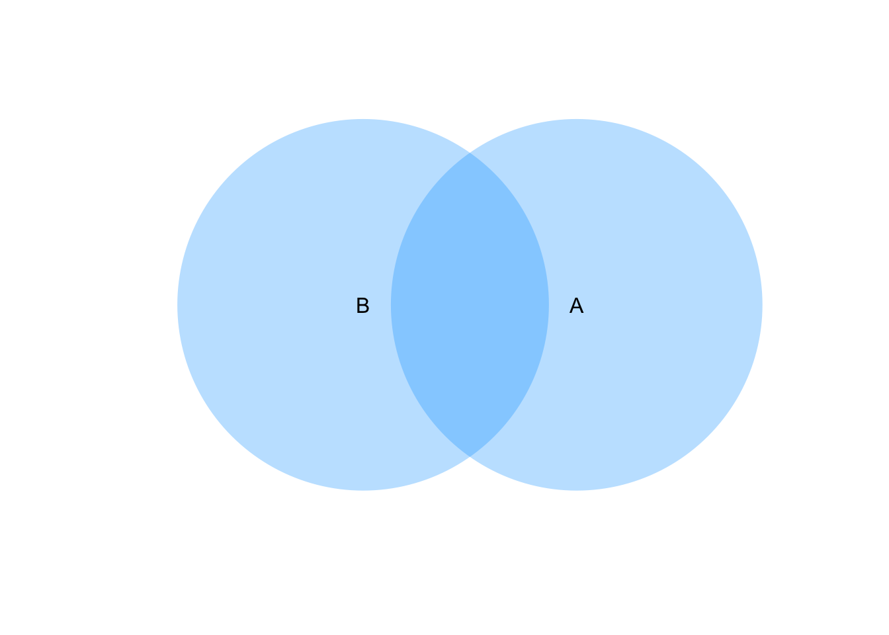

- 確率の基礎を復習
試行(trial) : 実験や観測事象(event) : 実験や観測の結果の集まり
数学的確率: ある試行で同じ程度に起こり得ると期待される全ての場合の数を\(N\), そのうち事象\(A\)の起こる場合の数が\(r\)である時、 \(\frac{r}{N}\)
1の目が出る数学的確率
N: \(サイコロの出目全ての場合の数=\{1,2,3,4,5,6\}= 6\)
r: \(1の目がおこる場合の数={1}= 1\) \(p=\frac{1}{6}\)
統計的確率: 試行を同じ条件下で\(n\)回繰り返し、事象\(A\)が起こった回数を\(r\)とするとき、 \(\frac{r}{n}\)を数学的確率\(p\)の近似と考える。事象:ある試行の結果の集まり全事象(標本空間): 試行によって起こりうるすべてき結果さいころを投げて、出る目を全て観察するした場合の全事象 \(U={1, 2, 3, 4, 5, 6}\)
偶数が出る目の事象\(A={2, 4, 6}\) 奇数が出る目の事象\(A={1, 3, 5}\)
\(A\)は\(U\)の部分集合
全事象\(U\): 標本空間 和事象\(A\cup B\): 2つの事象A, Bの少なくとも一方が起こる確率 積事象\(A\cap B\) 2つの事象A, Bが同時に起こる確率 空事象\(\phi\) どんな結果も含んでいないという事象 排反事象\(A\cap B=\phi\): 2つの事象A,Bが決して同時には起こらないという事象、この時、AとBは互いに排反であるという。 余事象 \(A^c\): 事象Aが起こらないという事象
\(A_1, A_2, \dots, A_n\)の和事象
\[\displaystyle A_1\cup A_2 \cup \dots \cup A_n = \bigcup_{i=1}^n A_i \]
\(A_1, A_2, \dots, A_n\)の積事象
\[\displaystyle A_1\cap A_2 \cap \dots \cap A_n = \bigcap_{i=1}^n A_i \]
require(venneuler)
v <- venneuler(c(A = 450, B = 450, `A&B` = -5))
v$colors <- c(0.66, 0.66)
plot(v)和事象 \[\displaystyle A_1\cup A_2 \cup \dots \cup A_n = \bigcup_{i=1}^n A_i \]
v <- venneuler(c(A = 450, B = 450, `A&B` = 200))
v$colors <- c(0.66, 0.66)
plot(v)
余事象の法則 \(P{A^c}=1-P{A}\): 余事象の確率は、1からAの確率引く
和事象の法則
事象\(A\)と事象\(B\)が排反の時: \(P{A\cup B}=P{A}+P{B}\)
事象\(A\)と事象\(B\)が排反でない時: \(P{A\cup B}=P{A}+P{B}-P{A\cap B}\) 重なってる分(積事象)を引く
事象の独立 事象Aが起こったという条件のもとで事象Bが起こる確率(条件付き確率)を \(P{B|A}=frac{P{A\cap B}}{P{A}}\), ただし、\(P{A}\neq=0\) \(P{B|A}=frac{P{B}\)なであるなら、事象\(A\)と事象\(B\)は独立、独立でない場合は従属であるという。
事象Aと事象Bが独立であるとき \(P{A\cap B}=P{A}\dot P{B}\)
積事象の法則Copyright © 2016 竹林由武. All rights reserved.